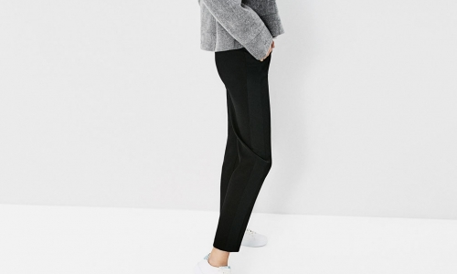
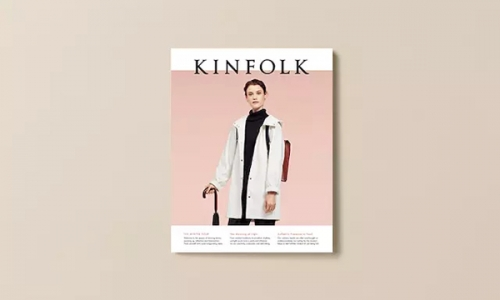
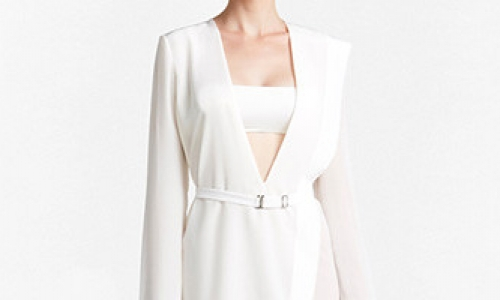
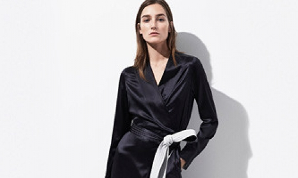
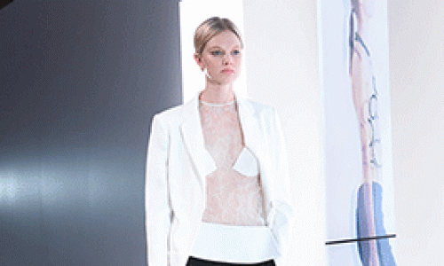
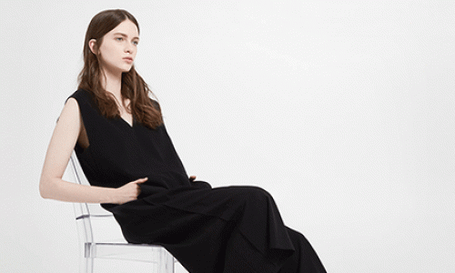

-
16/17秋冬男装毛衫图案推荐--趣味字母
字母元素设计在近些年的图案元素中逐渐占据主导位置，多种趣味的字母元素的运用手法应运而生。字母图案以印花、绣花、提花、植绒等工艺，做工精致，表现出时尚而不拘束的味道。...
2017-02-27 admin
-

针织趋势：2017春夏男士休闲针织衫款式、色彩及工艺剖析
无论是圆领衫、亨利衫，还是开衫，本季的休闲针织衫都带有天然的朴素感。粗纺线、夹色纱和段染纱线打造出织纹外观，同时采用砂色、烟草色和果蔬绿等配色。经典卫衣和丹宁外观呈现水洗效果;亮丽的粉蜡色显得积极乐观。款式：圆领衫和开衫采用箱型短款版型设计;罩衫、飘逸开衫、卫...
2017-02-27 admin
-

温柔的粉晶色变得无处不在，是潘通决定的吗？
先问一个问题：人类在讨论颜色的时候实际上在讨论什么?今年，最流行的颜色恐怕要算粉晶色了。就在 2015 年年底，研究颜色最权威的机构潘通公布了粉晶色为“年度流行颜色”后，这个曾在轻博客网站 Tumblr 上很火的颜色出现在了一切你目所能及的东西上—— Calv...
2017-02-27 admin
-

维密官方发布了最新预告片，今年的秀场定在了巴黎
每到年底，维多利亚的秘密内衣秀都会如约而至。关于今年大秀将移师巴黎的说法虽然传了很久，但真确定下来还是 10 月 24 日，维密官方发布了最新预告片，当中明确地给出了信息，11 月 30 日的法国巴黎将迎来这场“美好肉体联欢会”。每到年底，维多利亚的秘密内衣秀...
2017-02-27 admin
-

春夏纽约男装周Uri Minkoff大玩行为艺术
纽约男装周首日，一整天的秀看下来，随便抓一个人你问对哪一个牌子印象最深，回答你的十有八九都是Uri Minkoff!你问为什么?人家今儿大玩行为艺术，将男装周的静态展带得动感起来!!!在旁人眼中Uri Minkoff设计风格休闲正式，各色男模该露胸肌的露胸肌，...
2017-02-27 admin
-

巴黎时装周匆匆走过，留下这三种趋势不得不知！
巴黎时装周已经落下帷幕近一周时间了，阵容强大的时尚秀依然在潮人们的脑海里不断浮现，一场聚集了时尚与设计灵感的视觉盛宴，究竟带给了人们什么?且看巴黎时装周匆匆走过，留下这三种趋势不得不知!本季的T台很神奇地呈现了这个当下最为常见的风格，相当多的品牌都推出了廓形宽...
2017-02-27 admin
-

2017/18秋冬面料与材质灵感の细节&饰边
设计志：饰边的装饰功能赋予实用性全新的工业风美感。手工细节、做旧效果和稀薄配色都让金属配件和装饰品显得时尚前卫。亲近自然：饰边和装饰品展示出自然界的纯粹物质性，从生物形态到抽象形态，包罗万象。地质图案和生物印象用于硬饰边或软饰边，同时采用天然配色或烈焰配色。夜...
2017-02-27 admin